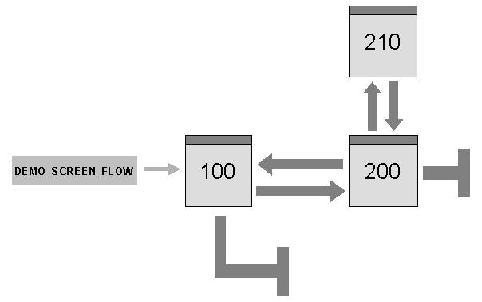

AS ABAP Release 754, ©Copyright 2019 SAP SE. All rights reserved.
ABAP Keyword Documentation → ABAP − Reference → SAP GUI User Dialogs → General Dynpros → Dynpro Flow and Dynpro Sequences →Dynpros, Dynpro Sequences
This example demonstrates how dynpro sequences behave.
Source Code
PROGRAM sapmdemo_screen_flow MESSAGE-ID demo_flight.
TABLES: spfli,
sairport,
scarr.
DATA: ok_code TYPE c LENGTH 4,
rcode TYPE c LENGTH 5,
old_spfli TYPE spfli.
* PBO
MODULE status_0100 OUTPUT.
SET PF-STATUS 'TD0100'.
SET TITLEBAR '100'.
ENDMODULE.
MODULE status_0200 OUTPUT.
SET PF-STATUS 'TD0200'.
SET TITLEBAR '100'.
ENDMODULE.
MODULE status_0210 OUTPUT.
SET PF-STATUS 'POPUP'.
SET TITLEBAR 'POP'.
ENDMODULE.
* PAI
MODULE user_command_0100 INPUT.
CASE ok_code.
WHEN space.
SELECT SINGLE *
FROM spfli
WHERE carrid = @spfli-carrid
AND connid = @spfli-connid
INTO @spfli.
IF sy-subrc NE 0.
MESSAGE e005 WITH spfli-carrid spfli-connid.
ENDIF.
old_spfli = spfli.
CLEAR ok_code.
WHEN 'CANC'.
CLEAR ok_code.
SET SCREEN 0. LEAVE SCREEN.
WHEN 'EXIT'.
CLEAR ok_code.
SET SCREEN 0. LEAVE SCREEN.
WHEN 'BACK'.
CLEAR ok_code.
SET SCREEN 0. LEAVE SCREEN.
ENDCASE.
ENDMODULE.
MODULE user_command_0200 INPUT.
CASE ok_code.
WHEN 'SAVE'.
UPDATE spfli.
IF sy-subrc = 0.
MESSAGE s001 WITH spfli-carrid spfli-connid.
ELSE.
MESSAGE a002 WITH spfli-carrid spfli-connid.
ENDIF.
CLEAR ok_code.
WHEN 'EXIT'.
CLEAR ok_code.
PERFORM safety_check USING rcode.
IF rcode = 'EXIT'. SET SCREEN 0. LEAVE SCREEN. ENDIF.
WHEN 'BACK'.
CLEAR ok_code.
PERFORM safety_check USING rcode.
IF rcode = 'EXIT'. SET SCREEN 100. LEAVE SCREEN. ENDIF.
WHEN 'DELE'.
MESSAGE w011.
DELETE FROM spfli
WHERE carrid = @spfli-carrid
AND connid = @spfli-connid.
ENDCASE.
ENDMODULE.
MODULE check_fr_airport INPUT.
SELECT SINGLE *
FROM sairport
WHERE id = @spfli-airpfrom
INTO @sairport.
IF sy-subrc <> 0.
MESSAGE e003 WITH spfli-airpfrom.
ENDIF.
ENDMODULE.
MODULE check_to_airport INPUT.
SELECT SINGLE *
FROM sairport
WHERE id = @spfli-airpto
INTO @sairport.
IF sy-subrc <> 0.
MESSAGE e004 WITH spfli-airpto.
ENDIF.
ENDMODULE.
MODULE exit_0100 INPUT.
CASE ok_code.
WHEN 'CANC'.
CLEAR ok_code.
SET SCREEN 0. LEAVE SCREEN.
WHEN 'EXIT'.
CLEAR ok_code.
SET SCREEN 0. LEAVE SCREEN.
WHEN 'BACK'.
CLEAR ok_code.
SET SCREEN 0. LEAVE SCREEN.
ENDCASE.
ENDMODULE.
MODULE exit_0200 INPUT.
CASE ok_code.
WHEN 'CANC'.
CLEAR ok_code.
SET SCREEN 100. LEAVE SCREEN.
ENDCASE.
ENDMODULE.
MODULE user_command_0210 INPUT.
CASE ok_code.
WHEN 'SAVE'. SET SCREEN 0. LEAVE SCREEN.
WHEN 'EXIT'. SET SCREEN 0. LEAVE SCREEN.
WHEN 'CANC'. SET SCREEN 0. LEAVE SCREEN.
ENDCASE.
ENDMODULE.
MODULE read_text_0100 INPUT.
SELECT SINGLE *
FROM scarr
WHERE carrid = @spfli-carrid
INTO @scarr.
ENDMODULE.
* Subroutine
FORM safety_check USING rcode.
LOCAL ok_code.
rcode = 'EXIT'.
CHECK spfli NE old_spfli.
CLEAR ok_code.
CALL SCREEN 210 STARTING AT 10 5.
CASE ok_code.
WHEN 'SAVE'. UPDATE spfli.
WHEN 'EXIT'.
WHEN 'CANC'. CLEAR spfli.
ENDCASE.
ENDFORM.
Description
The transaction DEMO_SCREEN_FLOW uses three dynpros. The dynpros 100 and 200 form a sequence. Dynpro 210 is a modal dialog box and is only called under special circumstances.
This transaction is a good example of how a dynpro sequence is implemented. A closer look at dynpro 200 shows how the modal dialog box is called. When processing the BACK or EXIT function codes, the PAI module must check if the flight data has been changed since it was last displayed or saved. If this is the case, dynpro 210 is called as a modal dialog box. The following parts of the flow logic of dynpro 200 are as follows:
The system calls two dialog modules at the PAI event. The user interface of transaction DEMO_SCREEN_FLOW offers the functions Back, Exit, and Cancel as return commands. On the screen of dynpro 200, the user should only be able to leave the screen directly to dynpro 100 using Cancel. The function code is processed in the module exit_200. The next dynpro is set dynamically to 100, and dynpro 200 is terminated immediately using LEAVE SCREEN. All other function codes for screen 200 are processed in module user_command_200:
If the Exit function is chosen (function code EXIT), the user leaves the transaction completely since the dynpro sequence is ended dynamically using SET SCREEN 0. If the user chooses Back (function code BACK), the next dynpro is changed dynamically to 100 using SET SCREEN 100.
The subroutine safety_check first compares the current values of the dynpro fields with the values saved. If the values match, no save is needed, and the routine terminates. If the values differ, safety_check calls the modal dialog box of dynpro 210. This asks the user if he or she wants to save, and returns the answer to the field ok_code. The static next dynpro for dynpro 210 is 210. However, the processing logic (module user_command_210) always sets the next dynpro dynamically to 0, which returns control to the subroutine.
The following figure summarizes the flow of the dynpro sequences in the example:
